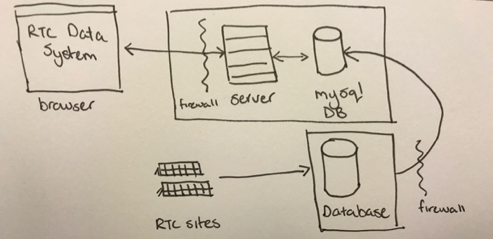
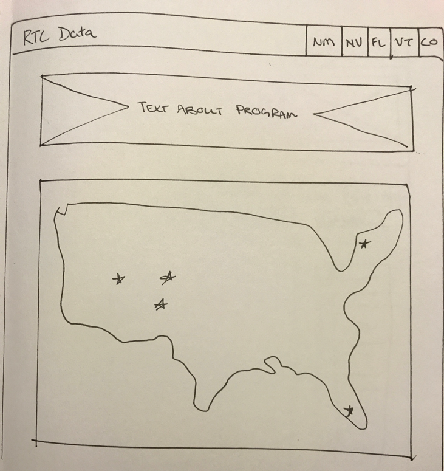
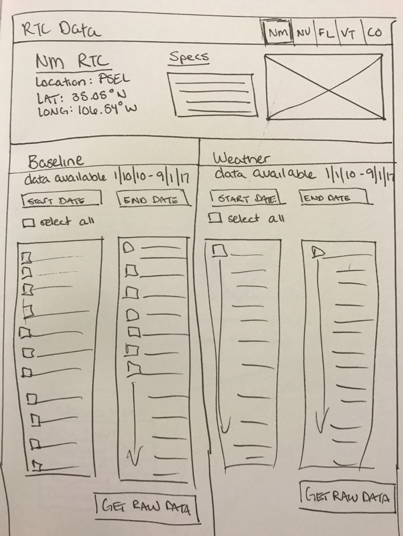
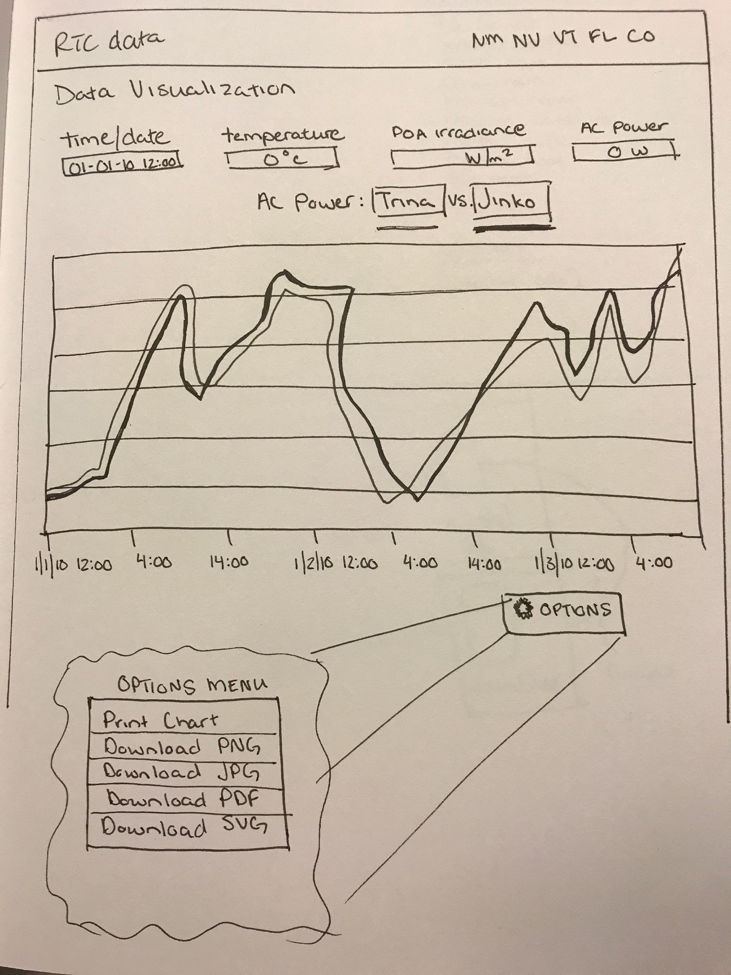

This website contains all the milestones for the RTC Data Project as completed for Iowa State's MS in Human Computer Interaction capstone course (HCI 598).
The non-proprietary performance data recorded by the Department of Energy’s Regional Test Centers (RTC) should be publically available. Currently, there is no way to access this data, and the RTC sites are continually gathering a backlog with no path forward to disseminate. The accessibility of this data is critical in demonstrating the value of the RTC program for the PV and greater solar industry within the United States. I propose to create a web-based system that ingests data from all 5 RTC sites to a centralized database that will allow for public downloads and visualizations of data.
The current system: The data is compiled and sent to a repository, stored in the form of .dat files. These .dat files are not human-readable and often contain previous day or days of information, leading to an overlap if compared side by side. This data is not easily converted to a usable form such as a CSV, rendering it functionally useless for comparison over time and comparison between systems.
The proposed system: The system will ingest data into a database and allow users a way to export data. The system will also contain visualizations of the data that can be manipulated to drill down based on user criteria. This will allow for researchers to quickly analyze large and small variances, incomplete data, hardware or system failures, and provide a quick snapshot of the overall performance of a system.
The tasks: Site Info, Export Data, Visualization
The measures: The success of the system will be evaluated based on user perception (System Usability Scale) to register the user’s perceived usability of the system. These scores will be contrasted with a Likert scale that asks questions regarding the perceived ease of use. During user testing, user behavior and actions during task scenarios will be recorded, which will result in a task success rate data. Overall engagement of the system will be measured based on Google Analytics.
Infrastructure: 
Home Page: 
Site Page: 
Visualization Page: 
Fidelity: The system was developed a high-fidelity web-based prototype. Working in code allows for a fast and iterative process. Since the system was able to access to real data, creating this type of prototype allowed the users to see the interactions more clearly, and doesn’t require them to make their own interpretations of how the system will behave.
Supported Tasks:
Unsupported Tasks:
These tasks were not included as it required too much effort for the scope of the project in terms of securing data and setting up authorization and authentication mechanisms. Also, the actual data I was given and used in the prototype did not include the proprietary data that would be required for this portion of the application.
Pre-test: The users were interviewed for demographic data prior to the usability test.
Tested Tasks:
Post-test:
Users were emailed two links to questionnaires (Usefulness, Satisfaction, and Ease of Use and System Usability Scale) to complete anonymously and without the proctor present to limit the potential bias. The questions for both questionnaires originate from standardized formats.